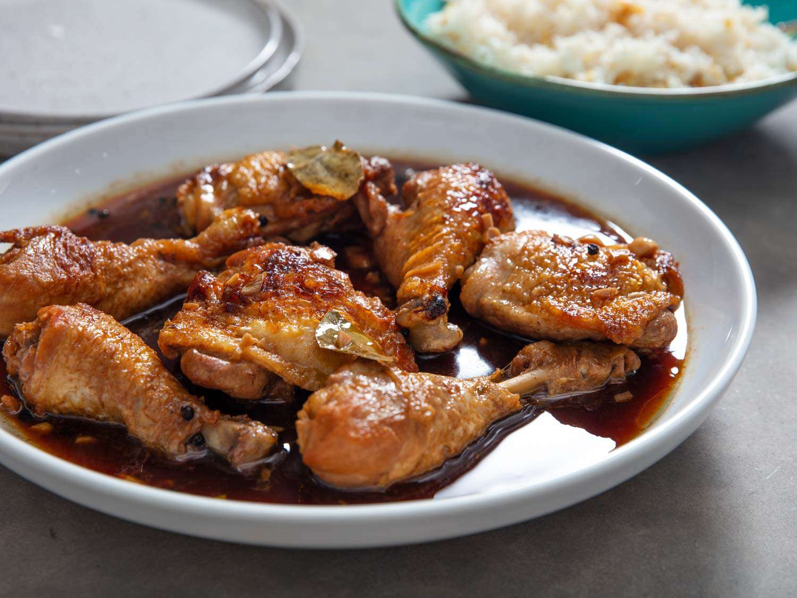

MAIN DISH · EASY
Chicken Adobo
Tender chicken simmered in a savory, tangy soy-vinegar sauce.
You'll need
1 kg chicken thighs, 1/2 cup soy sauce, 1/3 cup vinegar, 1 head crushed garlic, 3 bay leaves, 1 tsp whole peppercorns
Marinate the chicken in soy sauce and garlic for 30 minutes. Simmer with vinegar, bay leaves, and peppercorns until tender, then reduce the sauce.